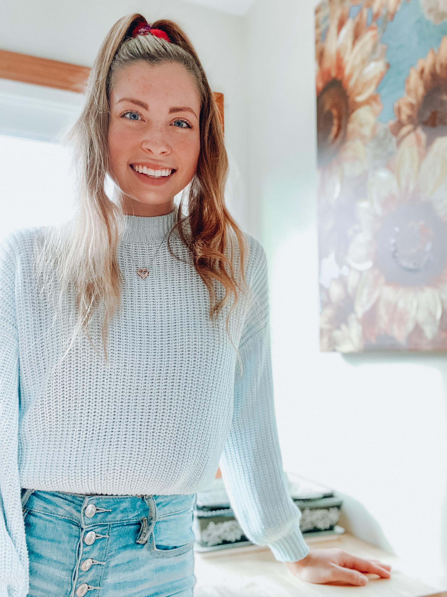

Hi! I'm Shaelyn. It's wonderful to meet you!
I'm currently a Senior at the University of Michigan School of Information where I'm focusing in User Experience Design and minoring in Computer Science.
I am actively seeking full-time UX Research, Design, and Product Design roles for 2020 following my graduation in May.
As a baton twirler, I've spent my whole life performing. I love the process of choreographing and designing routines to evoke emotion in an audience. Throughout my academic career, I've been drawn to UX because of my love for people and technology. I'm both analytical and empathetic, and my hope is that I can inspire joy in others through taking the time to learn and understand their perspectives, as well as through creating beautiful, logical, and positive experiences.